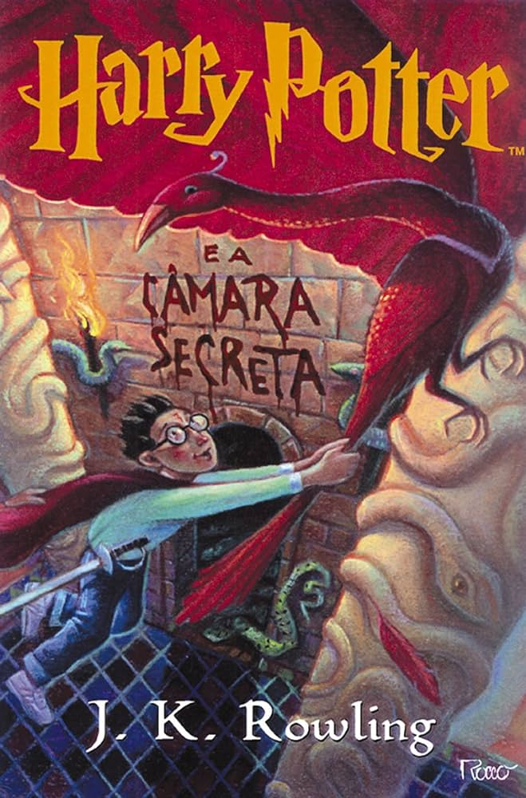
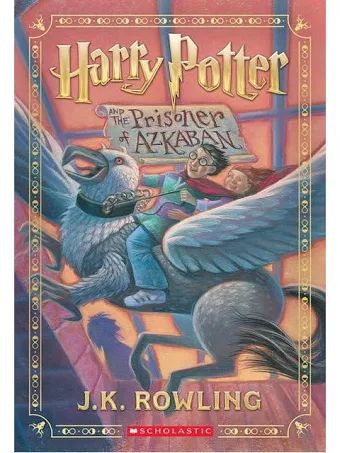
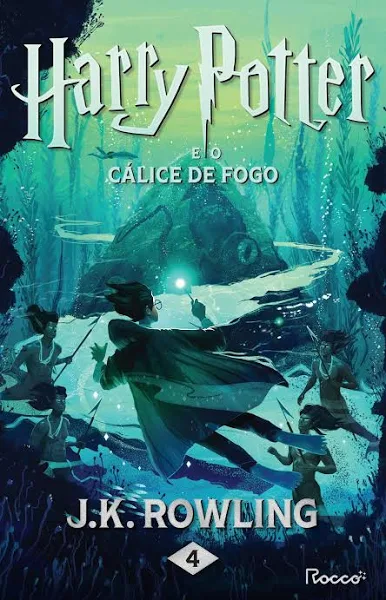
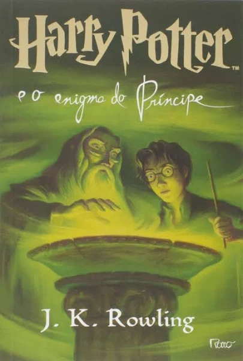
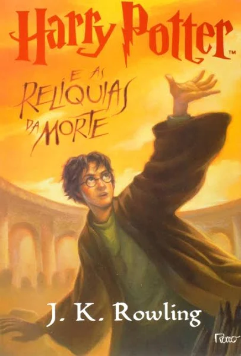
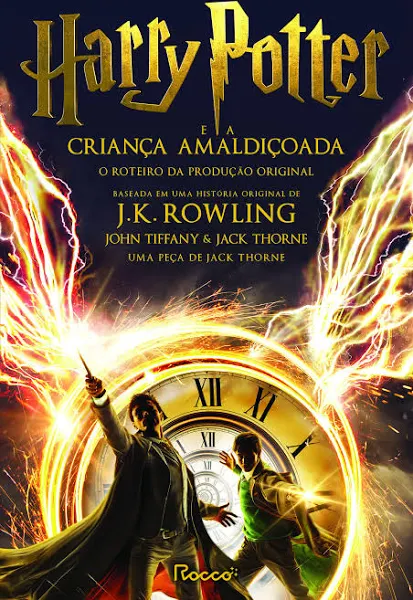
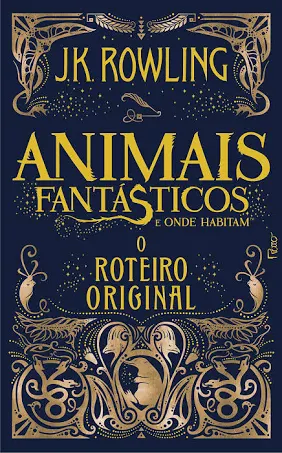
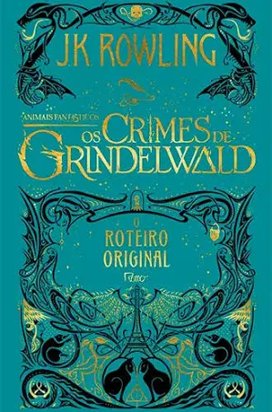
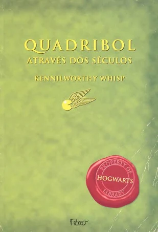

Harry Potter e a Pedra Filosofal

Descrição do Livro
Harry Potter e a Pedra Filosofal é o primeiro dos sete livros da série de fantasia Harry Potter, escrita por J. K. Rowling. O livro conta a história de Harry Potter, um órfão criado pelos tios que descobre, em seu décimo primeiro aniversário, que é um bruxo.
Harry Potter e a Camara Secreta
Descrição do Livro:
Harry Potter e a Camara Secreta é um romance de fantasia escrito pela britânica J. K. Rowling. É o segundo livro da série Harry Potter.
Harry Potter e o Prisioneiro de Azkaban
Descrição do Livro:
Harry Potter e o Prisioneiro de Azkaban é o terceiro livro da série de fantasia Harry Potter, da autora J. K. Rowling. O livro conta a história de Harry, Ron e Hermione, que estão no terceiro ano de Hogwarts e investigam o mistério de Sirius Black, um prisioneiro que foge da prisão de bruxos Azkaban.
Harry Potter e o Calíce de Fogo
Descrição do Livro:
Harry Potter está ansioso para começar o quarto ano na Escola de Magia e Bruxaria de Hogwarts, mas muitos acontecimentos inesperados estão por vir. Harry é escolhido pelo Cálice de Fogo para competir no Torneio Tribruxo, onde terá que lidar com desafios, feitiços, poções e confusões.
Harry Potter e a Ordem da Fênix

Descrição do Livro:
O livro narra as lutas de Harry e seus colegas durante o quinto ano na Escola de Magia e Bruxaria de Hogwarts, que incluem a aparição sub-reptícia do antagonista Lorde Voldemort e a preparação para os NOMs (acrônimo para Níveis Ordinários em Magia, são testes realizados por alunos do quinto ano).
Harry Potter e o Enigma do Príncipe
Descrição do Livro:
'Harry Potter e o enigma do príncipe' dá continuidade à saga do jovem bruxo Harry Potter a partir do ponto em que o livro anterior parou - o momento em que fica provado que o poder de Voldemort e dos Comensais da Morte, seus seguidores, cresce mais a cada dia, em meio à batalha entre o bem e o mal.
Harry Potter e as Relíquias da Morte
Descrição do Livro:
Em Harry Potter e as Relíquias da Morte, o encontro inevitável com Lord Voldemort não pode mais ser adiado. Harry, no entanto, precisa ganhar tempo para encontrar as Horcruxes que ainda estão faltando. E, pelo caminho, descobrir o que são afinal as Relíquias da Morte e como ele pode usá-las contra o Lorde das Trevas.
Harry Potter e a Criança Amaldiçoada
Descrição do Livro:
Harry Potter e a Criança Amaldiçoada é uma história de J.K. Rowling que conta a história de Harry Potter 19 anos após a Batalha de Hogwarts: Harry é um funcionário do Ministério da Magia, casado e com três filhos. Ele luta para deixar o passado para trás. Seu filho mais novo, Alvo, precisa lidar com o peso de um legado familiar que ele não escolheu. Quando o passado e o presente se cruzam, Harry e Alvo enfrentam uma verdade desconfortável: as trevas podem vir de lugares inesperados. A história também explora a oposição entre gerações, já que Harry e Draco foram antagonistas nos livros anteriores
Animais Fantásticos e Onde Habitam
Descrição do Livro:
Animais Fantásticos e Onde Habitam é um livro escrito e ilustrado à mão por J. K. Rowling para a Caridade Comic Relief em 2001. O livro foi escrito sob o pseudônimo de Newt Scamander, sendo criado como uma cópia do livro Animais Fantásticos e Onde Habitam que existe no universo de Harry Potter.
Animais Fantásticos: Os Crimes de Grindelwald
Descrição do Livro:
Animais Fantásticos: Os Crimes de Grindelwald é um filme de fantasia e aventura de 2018, sequência de Animais Fantásticos e Onde Habitam (2016) e segunda prequela da franquia Harry Potter. O filme conta a história de Gerardo Grindelwald, um bruxo das trevas que foge da prisão e reúne seguidores para criar bruxos puro-sangue e governar os seres não mágicos. Alvo Dumbledore recruta Newt Scamander, ex-aluno de Hogwarts, para frustrar os planos de Grindelwald
Animais Fantásticos: Os Segredos de Dumbledore
Descrição do Livro:
Situada na década de 1930, a estória leva ao envolvimento do Mundo Mágico na Segunda Guerra Mundial e explora as comunidades mágicas no Butão, Alemanha e China, além de locais previamente estabelecidos, incluindo Estados Unidos e Reino Unido.
Quadribol Através dos Séculos
Descrição do Livro:
Quadribol através dos séculos é um livro escrito por J. K. Rowling sob o pseudônimo de Kennilworthy Whisp, que conta a história do esporte quadribol, também conhecido como Quidditch, desde a sua origem até o presente século